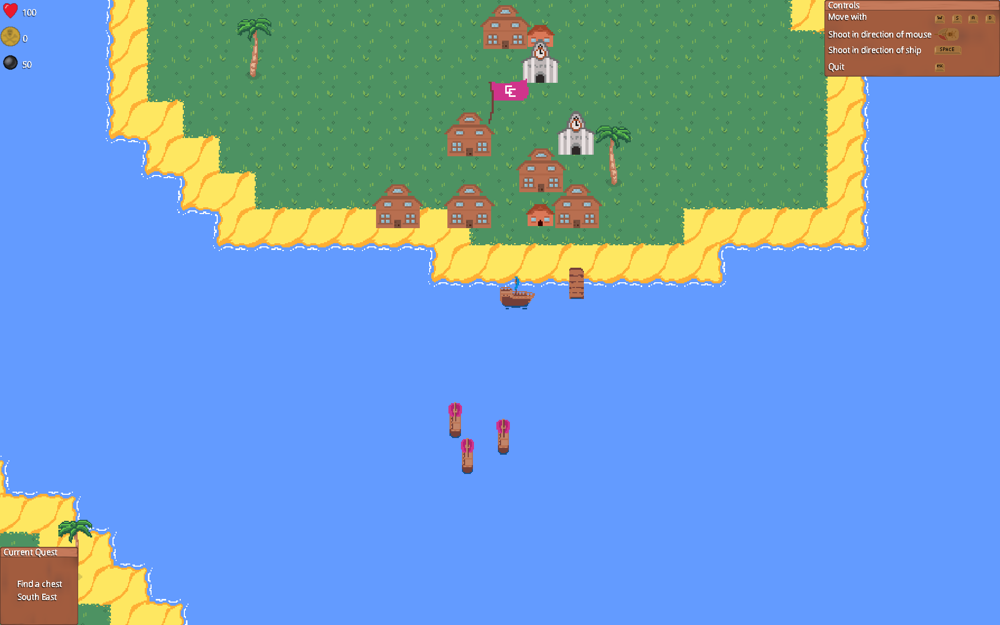

Game Info:
You control a ship sailing the Lake of York and are tasked with fulfilling certain quests along the way.
You use WASD keys to control the direction of the ship. The cannonball can be fired in the direction of the mouse with a left click, or in the direction of the ship with the spacebar.
Finding chests
You may need to follow directions in the prompt to sail around and find and collect a chest.
Destroying colleges
You may be tasked with destroying a given college. You will need to find the college by looking for its respective flag on an island and fire cannonballs to destroy every building on the island.
Destroying ships
There are enemy ships who are out to sink you so sink those scally wags first!!
Powerups
You can obtain powerups by completing quests or purchasing from shops. You can activate them from the number keys and can only have two active at the same time.
Obstacles
You may encounter obstacles on your travels which will damage you so make sure to avoid or defeat them.
Winning!
To win you must complete a number of quests dependant on your level. Then upon quitting the game you will be told if you won or not and your stats will be displayed.